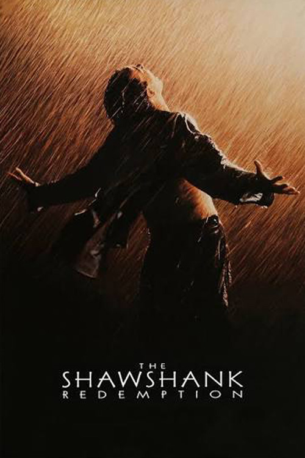

#10
The Shawshank Redemption
Year: 1994
Director: Frank Darabont
A banker is sentenced to life in prison for a crime he claims he didn't commit. Inside Shawshank prison, he forms an extraordinary friendship with fellow inmate Red and gradually finds hope, resilience, and a way to reclaim his freedom.
Watch Trailer
John Smith
Great list! I can't believe my favorite movie made it into the top 10.
Maria Rodriguez
Interesting choices. I would definitely move one of these movies into the top three.
Alex Johnson
This is a fantastic selection of movies. I especially loved the classics!